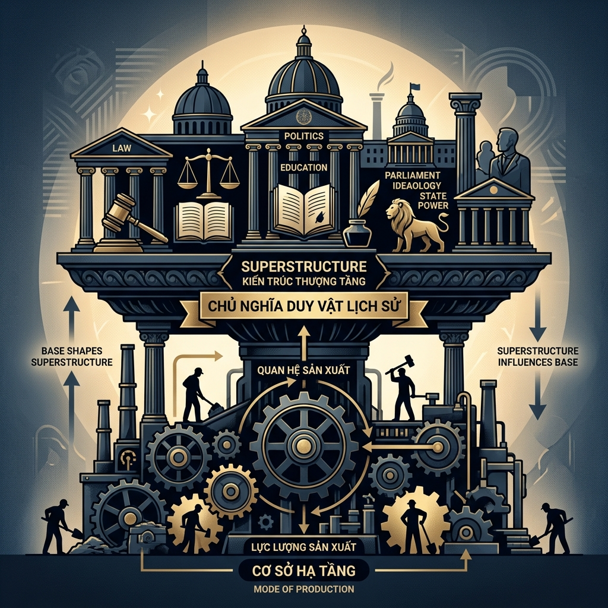
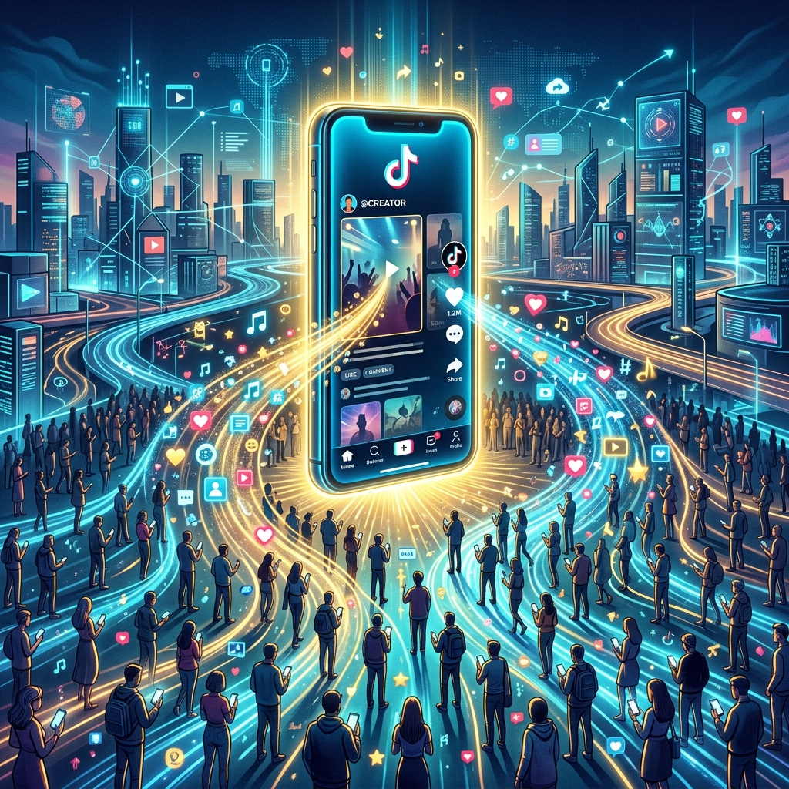

01. Đặt vấn đề
Trong đời sống hiện nay, có thể thấy một số cá nhân, nhóm hoặc tổ chức có khả năng ảnh hưởng mạnh mẽ đến kinh tế, truyền thông và đời sống xã hội. Điều này đặt ra câu hỏi: quyền lực xã hội thực sự bắt nguồn từ đâu?
Liệu sự chi phối đó có mang tính ngẫu nhiên hay phụ thuộc vào những điều kiện nhất định của xã hội? Dưới góc nhìn của chủ nghĩa duy vật lịch sử, mọi hiện tượng xã hội đều có cơ sở vật chất và tuân theo các quy luật khách quan.
Phương thức sản xuất: Yếu tố giữ vai trò quyết định trong việc giải thích bản chất quyền lực.
02. Cơ sở lý thuyết
Chủ nghĩa duy vật lịch sử là một nội dung cốt lõi của triết học Mác – Lênin, cung cấp phương pháp luận khoa học để giải thích sự vận động và phát triển của xã hội. Theo quan điểm này, đời sống xã hội trước hết được quyết định bởi hoạt động sản xuất vật chất, từ đó hình thành nên toàn bộ cấu trúc kinh tế và các lĩnh vực tinh thần của xã hội.

Sản xuất vật chất là quá trình con người sử dụng công cụ lao động tác động vào tự nhiên để tạo ra của cải phục vụ nhu cầu sống. Đây là cơ sở tồn tại và phát triển của xã hội, vì nếu không có sản xuất, con người không thể duy trì sự sống và xã hội không thể hình thành.
Trong mỗi giai đoạn lịch sử, con người sản xuất theo một cách thức nhất định gọi là phương thức sản xuất. Phương thức sản xuất là sự thống nhất giữa hai yếu tố:
Lực lượng sản xuất
Bao gồm người lao động, tư liệu sản xuất và trình độ khoa học – công nghệ; đây là yếu tố năng động, quyết định sự phát triển của xã hội.
Quan hệ sản xuất
Là quan hệ giữa người với người trong quá trình sản xuất, bao gồm quan hệ sở hữu, quản lý và phân phối.
Giữa hai yếu tố này tồn tại mối quan hệ biện chứng:
- Lực lượng sản xuất giữ vai trò quyết định.
- Quan hệ sản xuất tác động trở lại, có thể thúc đẩy hoặc kìm hãm lực lượng sản xuất.
- Khi quan hệ sản xuất không còn phù hợp, nó sẽ bị thay thế bằng quan hệ sản xuất mới tiến bộ hơn. Đây là quy luật cơ bản chi phối sự phát triển của xã hội.
Trên nền tảng đó hình thành mối quan hệ giữa Cơ sở hạ tầng và Kiến trúc thượng tầng:
Cơ sở hạ tầng
Toàn bộ các quan hệ sản xuất, tạo thành nền tảng kinh tế của xã hội.
Kiến trúc thượng tầng
Bao gồm nhà nước, pháp luật, tư tưởng, văn hóa và các thiết chế xã hội.
Mối quan hệ này cũng mang tính biện chứng: Cơ sở hạ tầng quyết định kiến trúc thượng tầng; ngược lại, kiến trúc thượng tầng có tính độc lập tương đối và tác động trở lại cơ sở hạ tầng.
03. Cơ sở vận dụng
Trong thời đại kinh tế số phát triển mạnh mẽ, các nền tảng công nghệ đang trở thành lực lượng có khả năng chi phối sâu rộng đến đời sống xã hội. Hiện nay, cùng với xu hướng chuyển đổi số và sự phát triển của trí tuệ nhân tạo (AI), các nền tảng mạng xã hội như TikTok, Facebook, Instagram, Threads,.. đang đóng vai trò trung gian trong việc kết nối thông tin, con người và thị trường.

3.1. Lựa chọn trường hợp nghiên cứu: Nền tảng công nghệ TikTok
TikTok là một trường hợp tiêu biểu có khả năng chi phối sâu rộng đời sống xã hội. Không chỉ đơn thuần là một ứng dụng giải trí, TikTok đã trở thành một hệ sinh thái có tác động đến nhiều lĩnh vực như truyền thông, thương mại và văn hóa.
3.2. Mức độ ảnh hưởng đến đời sống xã hội
Văn hóa – Xã hội
Tạo ra và lan truyền các xu hướng (trend), ảnh hưởng đến thẩm mỹ, phong cách sống và cách biểu đạt của giới trẻ.
Kinh tế
Thúc đẩy các mô hình kinh doanh mới như bán hàng qua livestream, marketing qua người ảnh hưởng (KOL/KOC).
Thông tin – Truyền thông
Nội dung trên TikTok ảnh hưởng đến cách tiếp cận thông tin, thậm chí có thể định hướng dư luận xã hội.
=> Mức độ ảnh hưởng đã mở rộng sang định hình hành vi và nhận thức xã hội.
3.3. Phân tích theo mối quan hệ lý luận
Lực lượng sản xuất (Yếu tố nền tảng)
Công nghệ trí tuệ nhân tạo (AI), thuật toán đề xuất nội dung, hệ thống dữ liệu người dùng quy mô lớn và hạ tầng kỹ thuật số toàn cầu.
Quan hệ sản xuất (Cơ chế tổ chức quyền lực)
Người dùng: Tạo nội dung và tương tác, đóng góp giá trị nhưng không kiểm soát hệ thống.
Nền tảng: Kiểm soát thuật toán phân phối, quyết định nội dung hiển thị và điều tiết dòng doanh thu.
=> Kiểm soát quá trình phân phối và tổ chức hệ thống.
Kiến trúc thượng tầng (Biểu hiện sự chi phối)
TikTok tác động đến Văn hóa (xu hướng, lối sống), Hành vi (tiêu dùng, giao tiếp) và Nhận thức (đánh giá thông tin).
Cơ chế tác động: Thuật toán ưu tiên, sự lặp lại khuếch đại và hiệu ứng lan truyền xã hội.
Khả năng chi phối của các lực lượng này không phải ngẫu nhiên, mà là kết quả của sự kết hợp giữa Lực lượng sản xuất hiện đại, Quan hệ sản xuất nền tảng và Tác động đến Kiến trúc thượng tầng. Điều này khẳng định giá trị bền vững của lý luận Mác - Lênin trong thời đại số.
04. Giải pháp và Bài học
Thay đổi thế giới quan: Nhìn nhận quyền lực một cách có cơ sở khoa học
Tránh nhìn nhận cảm tính: Thay vì coi sự chi phối là do "may mắn", chúng ta cần hiểu rằng quyền lực đó luôn có gốc rễ từ thực thể kinh tế - vật chất.
Cơ sở thực tế: Sự chi phối xã hội thực chất là sự thể hiện vị thế của một lực lượng trong hệ thống sản xuất vật chất. Hiểu rõ quy luật "Cơ sở hạ tầng quyết định Kiến trúc thượng tầng" giúp chúng ta có cái nhìn tỉnh táo trước các luồng thông tin và xu hướng xã hội.
Đối với cá nhân: Nâng cao năng lực để trở thành lực lượng sản xuất tiên tiến
Phát triển tri thức và kỹ năng: Tri thức và kỹ năng công nghệ chính là "vũ khí" để mỗi cá nhân tăng cường vị thế của mình trong bối cảnh khoa học là lực lượng sản xuất trực tiếp.
Chủ động thích ứng: Rèn luyện tư duy phản biện để "thanh lọc" thông tin từ các nền tảng như TikTok, không để bản thân bị thao túng về nhận thức hay cuốn theo trào lưu thụ động.
Tham gia và phát triển trong các mối quan hệ xã hội
Lựa chọn môi trường phù hợp: Chủ động tìm kiếm và tham gia vào những tổ chức có quan hệ quản lý và phân phối tiến bộ, nơi năng lực cá nhân được tôn trọng và phát triển tối đa.
Trách nhiệm xã hội: Nắm bắt các quy luật khách quan để định hướng hành động đúng đắn, đóng góp vào việc xây dựng một kiến trúc thượng tầng nhân văn và vì sự tiến bộ chung.
(Giáo trình triết học Mác - Lênin (2019) trang 154-183)
Ôn tập & Trải nghiệm
Hãy cùng củng cố lại kiến thức thông qua một trò chơi thú vị trên nền tảng Kahoot!
Chơi Kahoot ngay